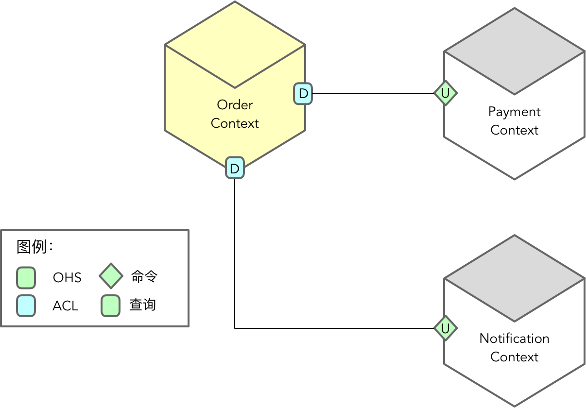

- 001 「战略篇」访谈 DDD 和微服务是什么关系？.md.html
- 002 「战略篇」开篇词：领域驱动设计，重焕青春的设计经典.md.html
- 003 领域驱动设计概览.md.html
- 004 深入分析软件的复杂度.md.html
- 005 控制软件复杂度的原则.md.html
- 006 领域驱动设计对软件复杂度的应对（上）.md.html
- 007 领域驱动设计对软件复杂度的应对（下）.md.html
- 008 软件开发团队的沟通与协作.md.html
- 009 运用领域场景分析提炼领域知识（上）.md.html
- 010 运用领域场景分析提炼领域知识（下）.md.html
- 011 建立统一语言.md.html
- 012 理解限界上下文.md.html
- 013 限界上下文的控制力（上）.md.html
- 014 限界上下文的控制力（下）.md.html
- 015 识别限界上下文（上）.md.html
- 016 识别限界上下文（下）.md.html
- 017 理解上下文映射.md.html
- 018 上下文映射的团队协作模式.md.html
- 019 上下文映射的通信集成模式.md.html
- 020 辨别限界上下文的协作关系（上）.md.html
- 021 辨别限界上下文的协作关系（下）.md.html
- 022 认识分层架构.md.html
- 023 分层架构的演化.md.html
- 024 领域驱动架构的演进.md.html
- 025 案例 层次的职责与协作关系（图文篇）.md.html
- 026 限界上下文与架构.md.html
- 027 限界上下文对架构的影响.md.html
- 028 领域驱动设计的代码模型.md.html
- 029 代码模型的架构决策.md.html
- 030 实践 先启阶段的需求分析.md.html
- 031 实践 先启阶段的领域场景分析（上）.md.html
- 032 实践 先启阶段的领域场景分析（下）.md.html
- 033 实践 识别限界上下文.md.html
- 034 实践 确定限界上下文的协作关系.md.html
- 035 实践 EAS 的整体架构.md.html
- 036 「战术篇」访谈：DDD 能帮开发团队提高设计水平吗？.md.html
- 037 「战术篇」开篇词：领域驱动设计的不确定性.md.html
- 038 什么是模型.md.html
- 039 数据分析模型.md.html
- 040 数据设计模型.md.html
- 041 数据模型与对象模型.md.html
- 042 数据实现模型.md.html
- 043 案例 培训管理系统.md.html
- 044 服务资源模型.md.html
- 045 服务行为模型.md.html
- 046 服务设计模型.md.html
- 047 领域模型驱动设计.md.html
- 048 领域实现模型.md.html
- 049 理解领域模型.md.html
- 050 领域模型与结构范式.md.html
- 051 领域模型与对象范式（上）.md.html
- 052 领域模型与对象范式（中）.md.html
- 053 领域模型与对象范式（下）.md.html
- 054 领域模型与函数范式.md.html
- 055 领域驱动分层架构与对象模型.md.html
- 056 统一语言与领域分析模型.md.html
- 057 精炼领域分析模型.md.html
- 058 彩色 UML 与彩色建模.md.html
- 059 四色建模法.md.html
- 060 案例 订单核心流程的四色建模.md.html
- 061 事件风暴与业务全景探索.md.html
- 062 事件风暴与领域分析建模.md.html
- 063 案例 订单核心流程的事件风暴.md.html
- 064 表达领域设计模型.md.html
- 065 实体.md.html
- 066 值对象.md.html
- 067 对象图与聚合.md.html
- 068 聚合设计原则.md.html
- 069 聚合之间的关系.md.html
- 070 聚合的设计过程.md.html
- 071 案例 培训领域模型的聚合设计.md.html
- 072 领域模型对象的生命周期-工厂.md.html
- 073 领域模型对象的生命周期-资源库.md.html
- 074 领域服务.md.html
- 075 案例 领域设计模型的价值.md.html
- 076 应用服务.md.html
- 077 场景的设计驱动力.md.html
- 078 案例 薪资管理系统的场景驱动设计.md.html
- 079 场景驱动设计与 DCI 模式.md.html
- 080 领域事件.md.html
- 081 发布者—订阅者模式.md.html
- 082 事件溯源模式.md.html
- 083 测试优先的领域实现建模.md.html
- 084 深入理解简单设计.md.html
- 085 案例 薪资管理系统的测试驱动开发（上）.md.html
- 086 案例 薪资管理系统的测试驱动开发（下）.md.html
- 087 对象关系映射（上）.md.html
- 088 对象关系映射（下）.md.html
- 089 领域模型与数据模型.md.html
- 090 领域驱动设计对持久化的影响.md.html
- 091 领域驱动设计体系.md.html
- 092 子领域与限界上下文.md.html
- 093 限界上下文的边界与协作.md.html
- 094 限界上下文之间的分布式通信.md.html
- 095 命令查询职责分离.md.html
- 096 分布式柔性事务.md.html
- 097 设计概念的统一语言.md.html
- 098 模型对象.md.html
- 099 领域驱动设计参考过程模型.md.html
- 100 领域驱动设计的精髓.md.html
- 101 实践 员工上下文的领域建模.md.html
- 102 实践 考勤上下文的领域建模.md.html
- 103 实践 项目上下文的领域建模.md.html
- 104 实践 培训上下文的业务需求.md.html
- 105 实践 培训上下文的领域分析建模.md.html
- 106 实践 培训上下文的领域设计建模.md.html
- 107 实践 培训上下文的领域实现建模.md.html
- 108 实践 EAS 系统的代码模型.md.html
- 109 后记：如何学习领域驱动设计.md.html
- 捐赠
081 发布者—订阅者模式
在领域设计模型中引入了领域事件，并不意味着就采用了领域事件建模范式，此时的领域事件仅仅作为一种架构或设计模式而已，属于领域设计模型的设计要素。在领域设计建模阶段，如何选择和设计领域事件，存在不同的模式，主要为发布者—订阅者模式和事件溯源模式，它们可以统称为“领域事件模式”。
发布者—订阅者模式
发布者—订阅者（Publisher-Subscriber）模式严格说来是一种架构模式，在领域驱动设计中，它通常用于限界上下文（或微服务）之间的通信与协作。为表区分，在领域模型内部使用事件进行状态通知的模式属于观察者模式，不属于发布者—订阅者的范畴。
我在《领域驱动战略设计实践》中将发布/订阅事件模式作为一种上下文映射（Context Map）模式，用于限界上下文之间的集成。之所以选择该模式，我们看到的主要价值在于事件机制的松散耦合：
采用发布/订阅事件的方式可以在解耦合方面走得更远。一个限界上下文作为事件的发布方，另外的多个限界上下文作为事件的订阅方，二者的协作通过经由消息中间件进行传递的事件消息来完成。当确定了消息中间件后，发布方与订阅方唯一存在的耦合点就是事件，准确地说，是事件持有的数据。由于业务场景通常较为稳定，我们只要保证事件持有的业务数据尽可能满足业务场景即可。这时，发布方不需要知道究竟有哪些限界上下文需要订阅该事件，它只需要按照自己的心意，随着一个业务命令的完成发布事件即可。订阅方也不用关心它所订阅的事件究竟来自何方，它要么通过 pull 方式主动去拉取存于消息中间件的事件消息，要么等着消息中间件将来自上游的事件消息根据事先设定的路由推送给它。通过消息中间件，发布方与订阅方完全隔离了。在上下文映射中，这种基于发布/订阅事件的协作关系，已经做到了力所能及的松耦合极致了。
由于事件消息无需返回值，就使得事件的发布可以采用异步非阻塞模式，因此，采用事件的发布者—订阅者模式不仅能够解除限界上下文之间的耦合，还能提高系统的响应能力。如今，基于流的响应式编程也越来越成熟，如 Kafka 这样的消息中间件通常又具有极强的吞吐能力和水平伸缩的集群能力，使得消息能够以接近实时的性能得到处理。
当我们采用发布/订阅事件来处理限界上下文之间的通信时，要明确限界上下文的边界，进而决定事件消息传递的方式。如果相互通信的限界上下文处于同一个进程内，就要考虑：引入一个分布式的消息中间件究竟值不值得？分布式通信可能会带来事务一致性、网络可靠性等多方面的问题，与其如此，不如放弃选择发布者—订阅者模式，改为观察者模式，又或者放弃分布式的消息中间件，选择共享内存的事件总线，如采用本地 Actor 模式，由 Actor 对象内置的 MailBox 作为传输事件的本地总线，达到异步通信（非跨进程）的目的。
应用事件
如果选择分布式的消息中间件实现发布者—订阅者模式，则限界上下文之间传递的领域事件属于外部事件。与之相对的是内部事件，它包含在限界上下文内的领域模型中。既然外部事件用于限界上下文之间，就应该由应用层的应用服务来负责发布生成和发布事件。由于外部事件和内部事件的定义过于含糊，考虑到这些事件所处的层次和边界，我将外部事件称之为“应用事件”，内部事件则保留为“领域事件”的名称，这样恰好可以与分层架构的应用层、领域层相对应。
应用事件与领域事件的作用不同。应用事件通常用于限界上下文之间的协作，由应用服务来负责，如果限界上下文的边界为进程边界，还需要考虑跨进程的事件消息通信。应用事件采用的模式为发布者—订阅者模式。领域事件属于领域模型的一部分，如果用于限界上下文内部之间的协作，采用的模式为观察者模式；如果领域事件表达的是状态迁移，采用的模式为事件溯源模式。发布一个领域事件就和创建一个领域对象一样，都是内存中的操作。只是在持久化时，才需要访问外部的资源。
如果一个事件既需要当前限界上下文关心，又需要跨限界上下文关心，那么，该事件就相同于同时扮演了领域事件和应用事件的角色。由于应用层依赖于领域层，即使是定义在领域层内部的领域事件，应用层也可以重用它。如果希望隔离外部限界上下文对领域事件的依赖，也可以将该领域事件转换为应用事件。
应用事件作为协调限界上下文之间的协作消息，存在两种不同的定义风格，Martin Fowler 将其分别命名为：事件通知（Event Notification）和事件携带状态迁移（Event-Carried State Transfer）。注意，这两种风格在发布者—订阅者模式中，起到都是“触发器”的作用。但两种风格的设计思维却如针尖对麦芒，前者降低了耦合，却牺牲了限界上下文的自治性；后者恰好相反，在换来限界上下文的自治性的同时，却是以模型耦合为代价的。
说明：Martin Fowler 在其文章 What do you mean by “Event-Driven”? 中探讨了所谓“事件驱动”的模式，除了上述的两种模式之外，还有事件溯源与 CQRS 模式。但我认为前两种模式属于事件消息定义风格，主要用于发布者—订阅者模式。发布者—订阅者模式与 CQRS 模式同属于架构模式，而事件溯源则属于领域模型的设计模式。
由于应用事件要跨越限界上下文，倘若事件携带了当前限界上下文的领域模型对象，在分布式架构中，订阅方就需要定义同等的包含了领域模型对象的应用事件。一旦应用事件携带的领域模型发生了变化，发布者与订阅者双方都要受到影响。为了避免这一问题，应用事件除了包含消息通知所必须具备的属性之外，不要传递整个领域模型对象，仅需携带该领域模型对象的身份标识（ID）。这就是所谓的“事件通知”风格。
由于“事件通知”风格传递的应用事件是不完整的，倘若订阅方需要进一步知道该领域模型对象的更多属性，就需要通过 ID 调用发布方公开的远程服务去获取。服务的调用又为限界上下文引入了复杂的协作关系，反过来破坏了事件带来的松散耦合。倘若将应用事件定义为一个相对自给自足的对象，就可以规避这些不必要的服务协作，提高了限界上下文的独立性。这就是“事件携带状态迁移”风格。
“事件携带状态迁移”风格要求应用事件携带状态，就可能需要在事件内部内嵌领域模型，导致发布方与订阅方都需要重复定义领域模型。为避免重复，可以考虑引入共享内核来抽取公共的应用事件类，然后由发布者与订阅者所在的限界上下文共享。若希望降低领域模型带来的影响，也可以尽量保持应用事件的扁平结构，即将领域模型的属性数据定义为语言框架的内建类型。如此一来，发布者与订阅者双方只需共享同一个应用事件结构即可，当然坏处是需要引入从领域模型到应用事件的转换。
一个定义良好的应用事件应具备如下特征：
- 事件属性应以内建类型为主，保证事件的平台中立性，减少甚至消除对领域模型的依赖
- 发布者的聚合ID作为构成应用事件的主要内容
- 保证应用事件属性的最小集
- 为应用事件定义版本号，支持对应用事件的版本管理
- 为应用事件定义唯一的身份标识
- 为应用事件定义创建时间戳，支持对事件的按序处理
- 应用事件应是不变的对象
我们可以为应用事件定义一个抽象父类：
public class ApplicationEvent implements Serializable {
protected final String eventId;
protected final String createdTimestamp;
protected final String version;
public ApplicationEvent() {
this("v1.0");
}
public ApplicationEvent(String version) {
eventId = UUID.randomUUID().toString();
createdTimestamp = new Timestamp(new Date().getTime()).toString();
this.version = version;
}
}
在业务流程中，我们经常面对存在两种操作结果的应用事件。不同的结果会导致不同的执行分支，响应事件的方式也有所不同。定义这样的应用事件也存在两种不同的形式。一种形式是将操作结果作为应用事件携带的值，例如支付完成事件：
public enum OperationResult {
SUCCESS = 0, FAILURE = 1
}
public class PaymentCompleted extends ApplicationEvent {
private final String orderId;
private final OperationResult paymentResult;
public PaymentCompleted(String orderId, OperationResult paymentResult) {
super();
this.orderId = orderId;
this.paymentResult = paymentResult;
}
}
采用这一定义的好处在于可以减少事件的个数。由于事件自身没有体现具体的语义，事件订阅者就需要根据 OperationResult 的值做分支判断。若要保证订阅者代码的简洁性，可以采用第二种形式，即通过事件类型直接表现操作的结果：
public class PaymentSucceeded extends ApplicationEvent {
private final String orderId;
public PaymentSucceeded (String orderId) {
super();
this.orderId = orderId;
}
}
public class PaymentFailed extends ApplicationEvent {
private final String orderId;
public PaymentFailed (String orderId) {
super();
this.orderId = orderId;
}
}
这两个事件定义的属性完全相同，区别仅在于应用事件的类型。
微服务的协同模式
若将限界上下文视为微服务，则发布者—订阅者模式遵循了协同（Choreography）模式来处理彼此之间的协作，这就决定了参与协作的各个限界上下文地位相同，并无主次之分。由于事件消息属于异步通信模式，因此在运用发布者—订阅者模式时，需要结合业务场景，明确哪些操作需要引入应用事件，由谁发布和订阅应用事件。发布者—订阅者模式并非排他性的模式，例如在执行查询操作时，又或者执行的命令操作并不要求高响应能力时，亦可采用同步的开放主机服务模式。
若要追求微服务架构的一致性，保证微服务自身的自治性，可考虑在架构层面采用纯粹的事件驱动架构（Event-Driven Architecture，EDA）。遵循事件驱动架构，微服务之间的协作皆采用异步的事件通信模式。即使协作方式为查询操作，也可使用事件流在服务本地缓存数据集，从而保证在执行查询操作时仅需要执行本地查询即可。要支持本地查询，需要在每次发布事件时，对应的订阅者负责获取自己感兴趣的数据，并将其缓存到本地服务的存储库中。例如，下订单场景需要订单服务调用库存查询服务以验证商品是否满足库存条件。若要避免跨服务之间的同步查询操作，就需要订单服务事先订阅库存事件流，并将该库存事件流保存在订单服务的本地数据库中。库存服务的每次变更都会发布事件，订单服务会订阅该事件，然后将其同步到库存事件流，以保证订单服务缓存的库存事件流是最新的。
既然限界上下文的协作方式发生了变化，意味着应用服务之间的调用方式也将随之改变。
在买家下订单的业务场景中，考虑订单上下文与支付上下文之间的协作关系。如果采用开放主机模式，则订单上下文将作为下游发起对支付服务的调用。支付成功后，订单状态被修改为“已支付”，按照流程就需要发送邮件通知买家订单已创建成功，同时通知卖家发货。这时，订单上下文会作为下游发起对通知服务的调用。显然，在这个业务场景中，订单上下文成为了整个协作过程的“枢纽站”：

发布者—订阅者模式就完全不同了。限界上下文成为了真正意义上的自治单元，它根本不用理会其他限界上下文。它像一头敏捷的猎豹一般游走在自己的领土疆域内，凝神静听，伺机而动，一旦自己关心的事件发布，就迅猛地将事件“叼”走，然后利用自己的业务逻辑去“消化”它，并在满足业务条件的时候，发布自己的事件“感言”，至于会是谁对自己发布的事件感兴趣，就不在它的考虑范围内了。显然，采用事件风格设计的限界上下文都是各扫门前雪，彼此具有平等的地位：
订单上下文既订阅了支付上下文发布的 PaymentCompleted 事件，又会在更新订单状态之后，发布 OrderPaid 事件。假定我们选择 Kafka 作为消息中间件，就可以在订单上下文定义一个事件订阅者，侦听指定主题的事件消息。该事件订阅器是当前限界上下文的北向网关：
public class PaymentEventSubscriber {
private ApplicationEventHandler eventHandler;
@KafkaListener(id = "payment", clientIdPrefix = "payment", topics = {"topic.ecommerce.payment"}, containerFactory = "containerFactory")
public void subscribeEvent(String eventData) {
ApplicationEvent event = json.deserialize<PaymentCompleted>(eventData);
eventHandler.handle(event);
}
}
ApplicationEventHandler 是一个接口，凡是需要处理事件的应用服务都可以实现它。例如 OrderAppService：
public class OrderAppService implements ApplicationEventHandler {
private UpdatingOrderStatusService updatingService;
private ApplicationEventPublisher eventPublisher;
public void handle(ApplicationEvent event) {
if (event instanceOf PaymentCompleted) {
onPaymentCompleted((PaymentCompleted)event);
} else {...}
}
private void onPaymentCompleted(PaymentCompleted paymentEvent) {
if (paymentEvent.OperationResult == OperationResult.SUCCESS) {
updatingSerivce.execute(OrderStatus.PAID);
ApplicationEvent orderPaid = composeOrderPaidEvent(paymentEvent.orderId());
eventPublisher.publishEvent(“payment", orderPaid);
} else {...}
}
}
OrderAppService 应用服务通过 ApplicationEventPublisher 发布事件。这是一个抽象接口，扮演了南向网关的作用，它的实现属于基础设施层，依赖了 Kafka 提供的 kafka-client 框架，通过调用该框架定义的 KafkaTemplate 发布应用事件：
public class ApplicationEventKafkaProducer implements ApplicaitonEventPublisher {
private KafkaTemplate<String, String> kafkaTemplate;
public void publishEvent(String topic, ApplicationEvent event) {
kafkaTemplate.send(topic, json.serialize(event);
}
}
采用发布者—订阅者模式实现限界上下文之间的协作时，要注意应用层对领域逻辑的保护与控制，确保领域逻辑的纯粹性。领域层的领域模型对象并未包含应用事件。应用事件属于应用层，类似服务调用的数据契约对象。事件的订阅与发布属于基础设施层：前者属于北向网关，可以直接依赖消息中间件提供的基础设施；后者属于南向网关，应用服务需要调用它，为满足整洁架构要求，需要对其进行抽象，再通过依赖注入到应用服务。
© 2019 - 2023 Liangliang Lee. Powered by gin and hexo-theme-book.